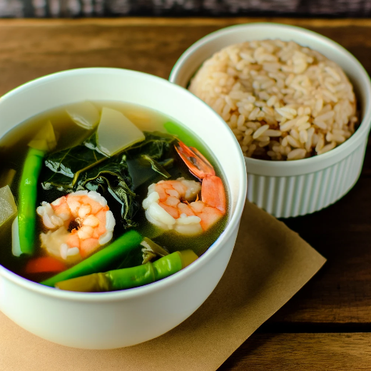

Sinigang na Hipon with Kangkong
Ingredients
- 150 grams (5 oz) shrimp, peeled and deveined
- 1 tablespoon vegetable oil
- 1 medium onion, chopped
- 2 cloves garlic, minced
- 1 tomato, chopped
- 1 tamarind disk (or 1 tablespoon tamarind paste)
- 4 cups water
- 1/2 teaspoon fish sauce (adjust to taste)
- Salt and pepper to taste
- 1 cup kangkong (water spinach), washed and trimmed
- Optional: Green chili pepper (sili) for spiciness
| Nutrition Facts |
| Calories |
218 kcal |
| Protien |
4.5g |
Meal Procedure
- Heat oil in a pot over medium heat. Add onion and garlic, cook until softened and fragrant.
- Add the tomato and cook for another minute.
- If using a tamarind disk, soak it in hot water for 10 minutes. Mash the softened disk to extract the pulp and discard the seeds. If using tamarind paste, add it directly to the pot.
- Pour in the water and bring to a boil. Add the tamarind extract or paste, fish sauce, salt, and pepper (to taste).
- Simmer for 5 minutes to allow the flavors to meld.
- Gently add the shrimp and cook for 2-3 minutes, or until pink and opaque.
- Add the kangkong and cook for another minute, or until wilted.
- Taste and adjust seasonings with fish sauce, salt, and pepper if needed.
- Serve hot with rice.